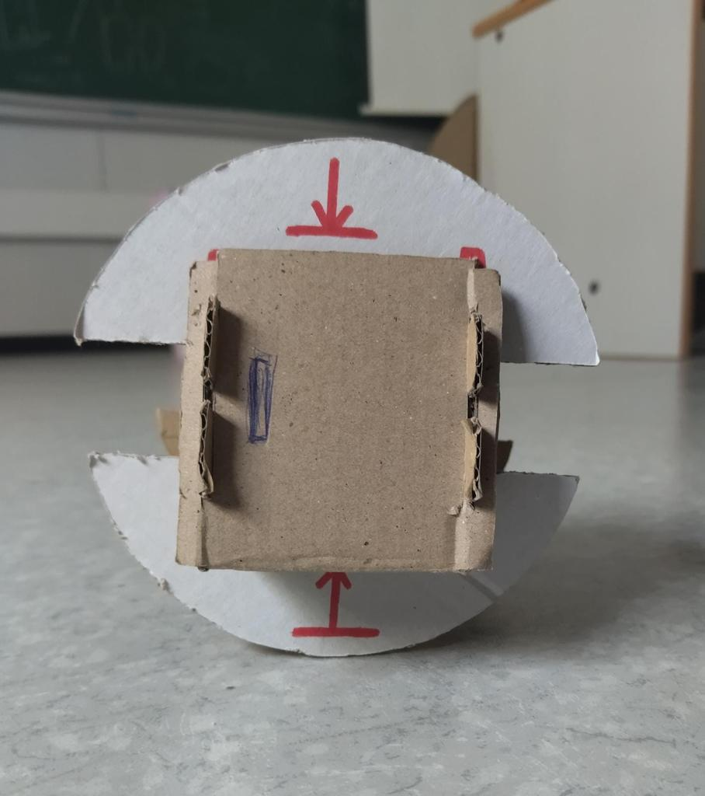
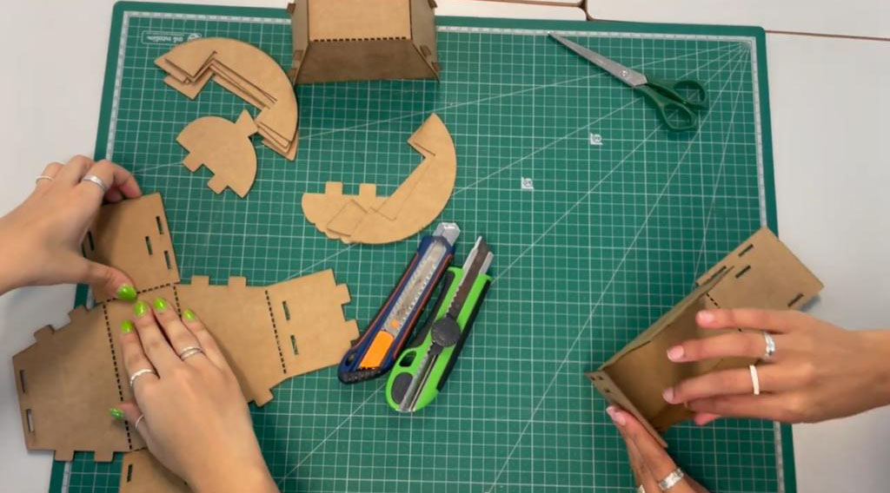
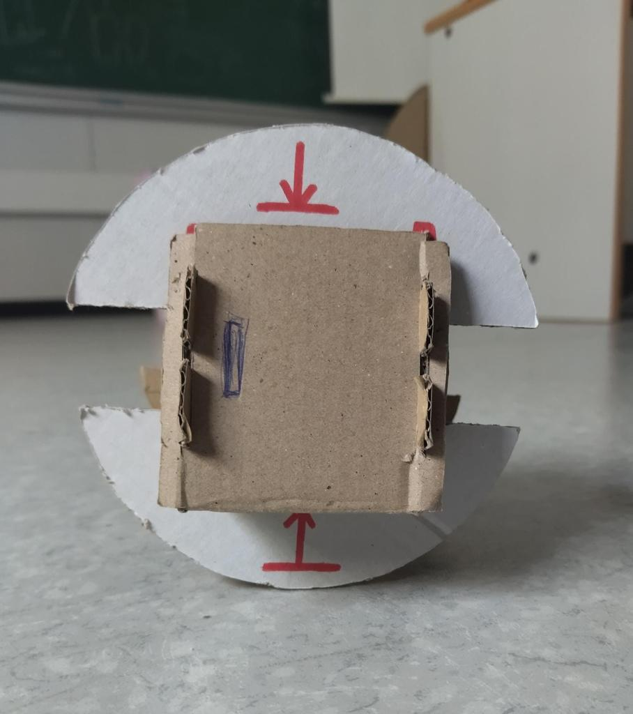
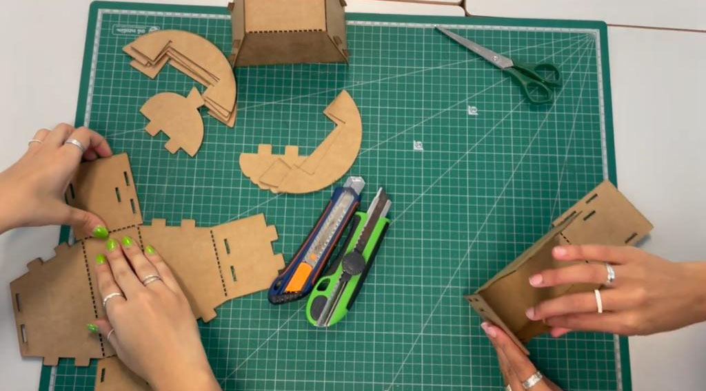
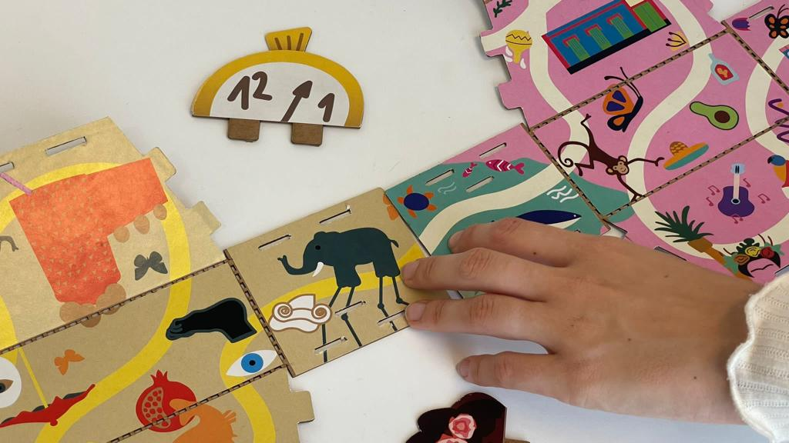
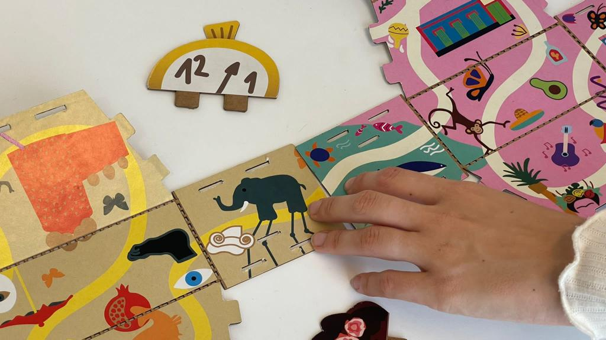

TRAPEQUE
The winning proposal came from us, YU Design UPV. Our project "Trapeque" secured first place in the global challenge held in June. Trapeque features a collection of six foldable characters, each containing a unique map that can be played with in different settings, whether at a restaurant, at home, or in transit. These toys are versatile, allowing individual play or group activities where players can combine different boards to form larger maps. Each character's map depicts the birthplace of iconic artists, providing educational trivia and engaging stories.

 




 
